В центре внимания
Свежие новости, яркие события и идеи для прогулок. Узнавайте, чем живут парки Москвы, и планируйте свой отдых.
Ваши увлечения
в Парках Москвы
Афиша
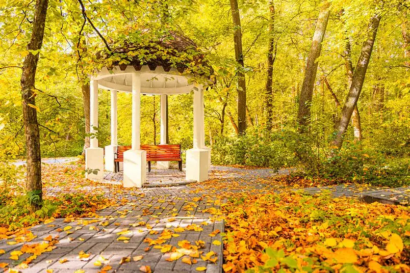
Бесплатно Зона отдыха «Покровский берег» Золотая осень: выходныев парках Москвы Здесь встречаются с друзьями, занимаются спортом, проводят время с семьёй и открывают новое. Мы помогаем найти парк, событие и занятие по душе. 12-13 октября, 12:00
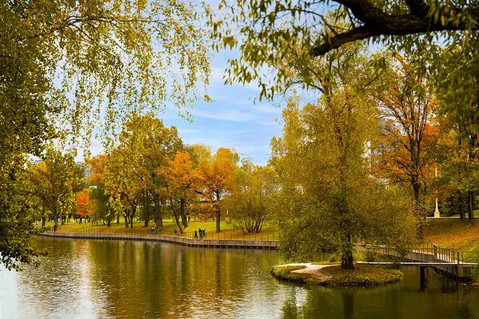
Парк Горького Экскурсия по осенним аллеям Здесь встречаются с друзьями, занимаются спортом, проводят время с семьёй и открывают новое. Мы помогаем найти парк, событие и занятие по душе. 17 октября, 12:00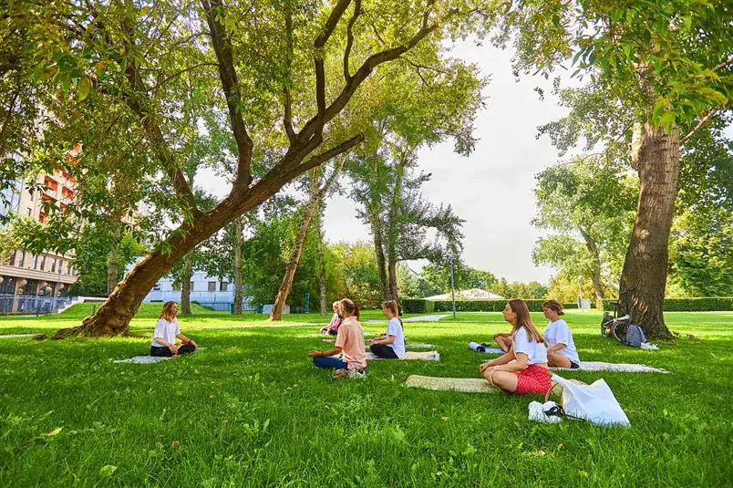
5 парков Йога под осенним небом Здесь встречаются с друзьями, занимаются спортом, проводят время с семьёй и открывают новое. Мы помогаем найти парк, событие и занятие по душе. 18 октября, 10:00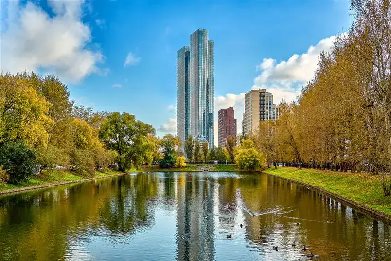
Коробковский сад Фестиваль «Осень в парках Москвы» Здесь встречаются с друзьями, занимаются спортом, проводят время с семьёй и открывают новое. Мы помогаем найти парк, событие и занятие по душе. 19 октября, 12:00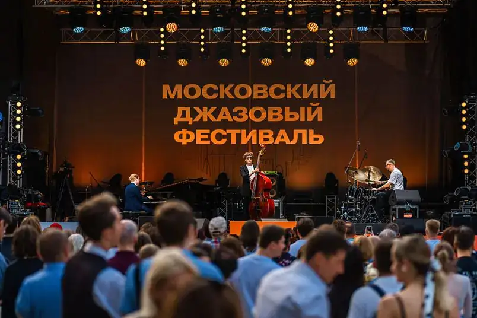
Бесплатно Парк «Северное Тушино» Джаз в осеннем парке Здесь встречаются с друзьями, занимаются спортом, проводят время с семьёй и открывают новое. Мы помогаем найти парк, событие и занятие по душе. 23 октября, 17:00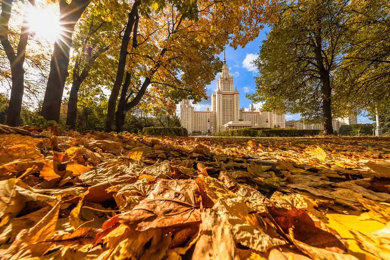
5 парков Мастерская осеннего гербария Здесь встречаются с друзьями, занимаются спортом, проводят время с семьёй и открывают новое. Мы помогаем найти парк, событие и занятие по душе. 23 октября, 12:00 Бесплатно Лианозовский парк Семейный квест «Тайны осени» Здесь встречаются с друзьями, занимаются спортом, проводят время с семьёй и открывают новое. Мы помогаем найти парк, событие и занятие по душе. 24 октября, 11:00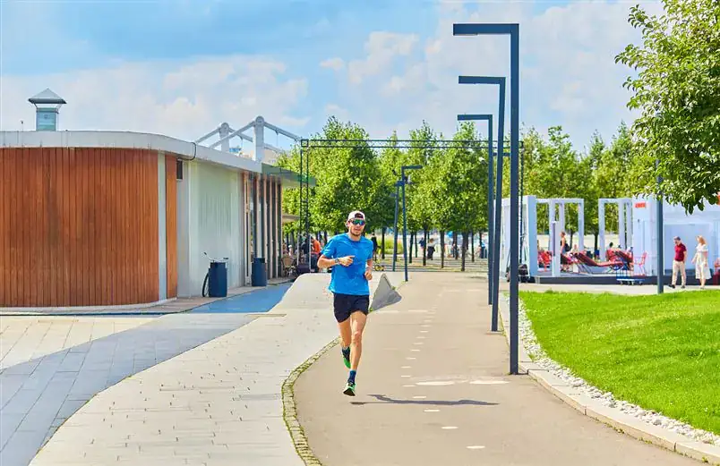
Парк им. Юрия Лужкова Осенний забег по парку Здесь встречаются с друзьями, занимаются спортом, проводят время с семьёй и открывают новое. Мы помогаем найти парк, событие и занятие по душе. 24 октября, 12:00По выбранным фильтрам событий нет
Показать ещёВыберем
ваш Парк Москвы?
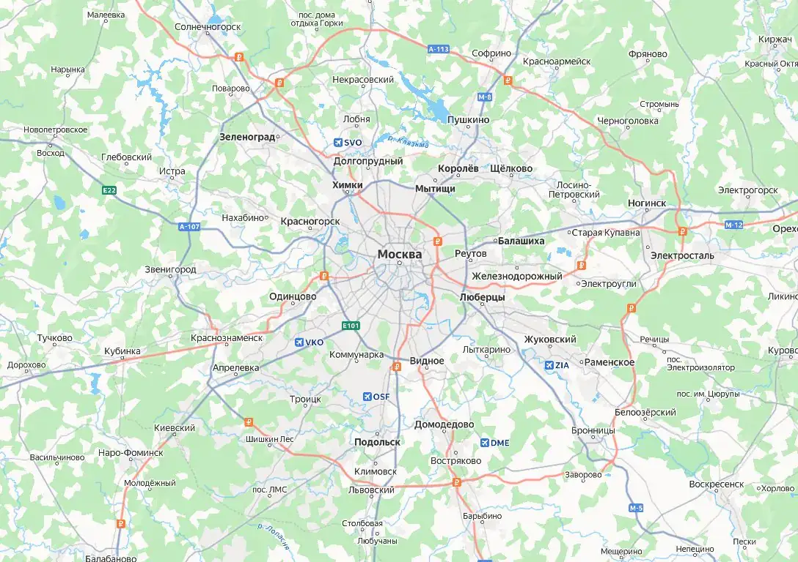
Кстати, у нас новости
Все новости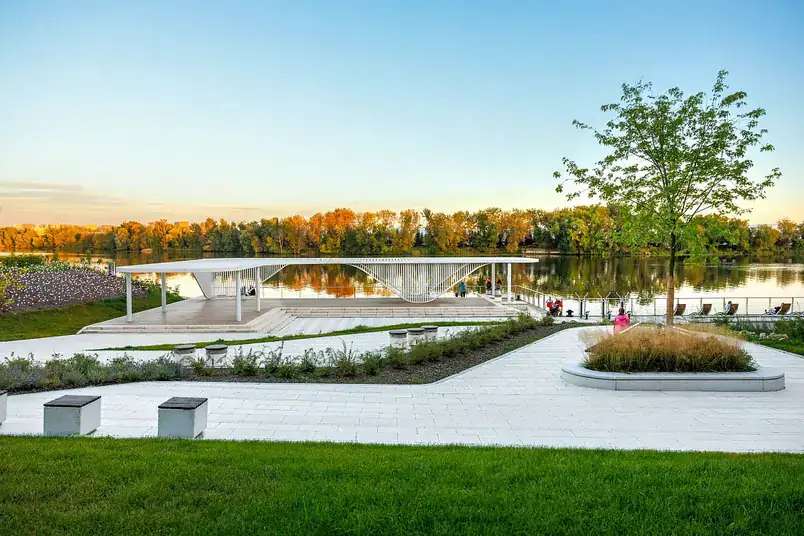
5 парков В парках Москвы появились новые площадки для отдыха и активного досуга Здесь встречаются с друзьями, занимаются спортом, проводят время с семьёй и открывают новое. Мы помогаем найти парк, событие и занятие по душе. 11 октября 2026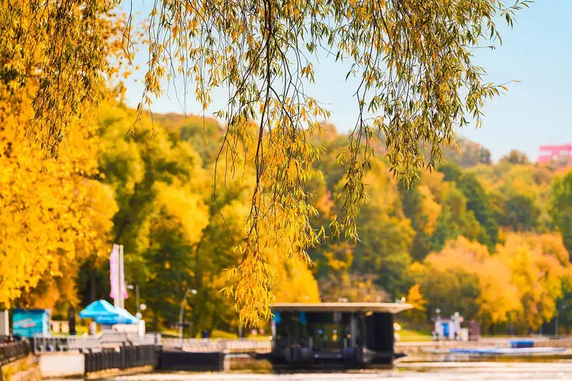
5 парков В парках Москвы открывается осенний сезон Здесь встречаются с друзьями, занимаются спортом, проводят время с семьёй и открывают новое. Мы помогаем найти парк, событие и занятие по душе. 11 октября 2026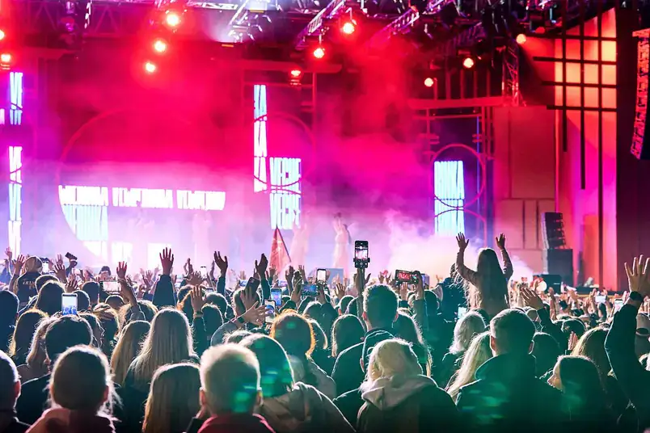
5 парков Осенние выходные: концерты и мастер-классы Здесь встречаются с друзьями, занимаются спортом, проводят время с семьёй и открывают новое. Мы помогаем найти парк, событие и занятие по душе. 10 октября 2026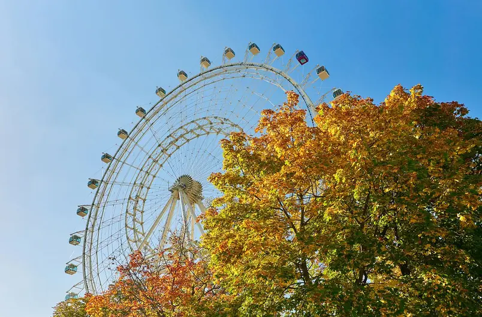
Коробковский сад Парки приглашают на семейные праздники осени Здесь встречаются с друзьями, занимаются спортом, проводят время с семьёй и открывают новое. Мы помогаем найти парк, событие и занятие по душе. 10 октября 2026Новый выпуск журнала
Истории парков, маршруты, интервью с горожанами
и новые городские привычки — в каждом выпуске
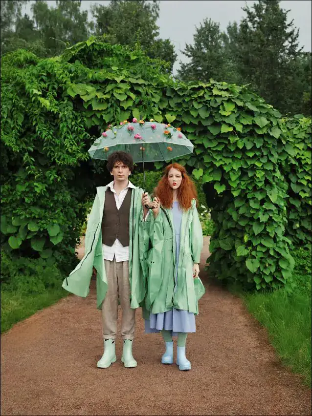
Все выпуски Осень 2026 Журнал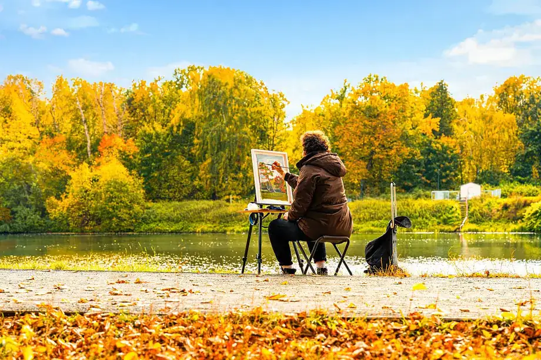
Статьи 5 парков Осенний гербарий своими руками Здесь встречаются с друзьями, занимаются спортом, проводят время с семьёй и открывают новое. Мы помогаем найти парк, событие и занятие по душе. 10 октября 2026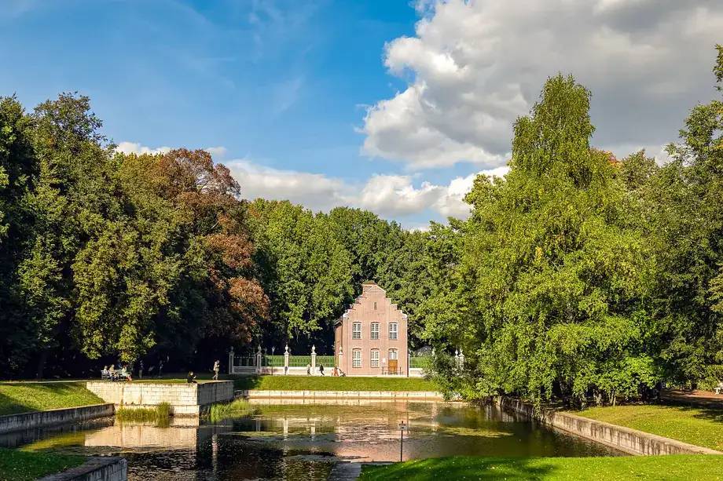
Статьи Коробковский сад Золотая осень: 5 маршрутов по паркам Москвы Здесь встречаются с друзьями, занимаются спортом, проводят время с семьёй и открывают новое. Мы помогаем найти парк, событие и занятие по душе.Парки Москвы
АНО «Развитие парков» занимается благоустройством и развитием парковых территорий, подведомственных Департаменту культуры города Москвы, созданием в них условий для комфортного пребывания, внедрением новых сервисов и услуг, организацией мероприятий и регулярных занятий для жителей и гостей столицы.
Планы на выходные —
в вашей почте
Новости парков, интересные события и новые маршруты
Спасибо! Подборки уже летят к вам.